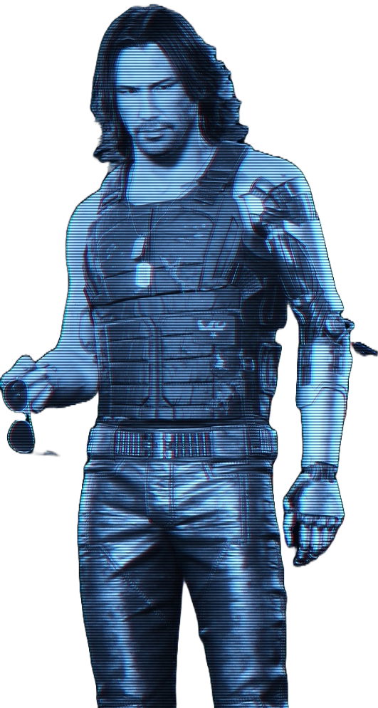

Netrunner operations
ARASAKA - MNL


Target Profile
Fingerprint Matrix
Criminal History
- Unauthorized infiltration — Sector 12
- Asset neutralization — ClearSky Ops
- Data breach & sabotage — ZeroGrid
- High-value assassination attempt
Full Body Scan

Personal Information
Name: LUCIA VOSS
Age: 33
Origin: Neo-Tokyo Grid
Alias: "Red Siren"
Status: High Threat
Assigned Operative
Codx
Field Assassin
Deep Scan Access